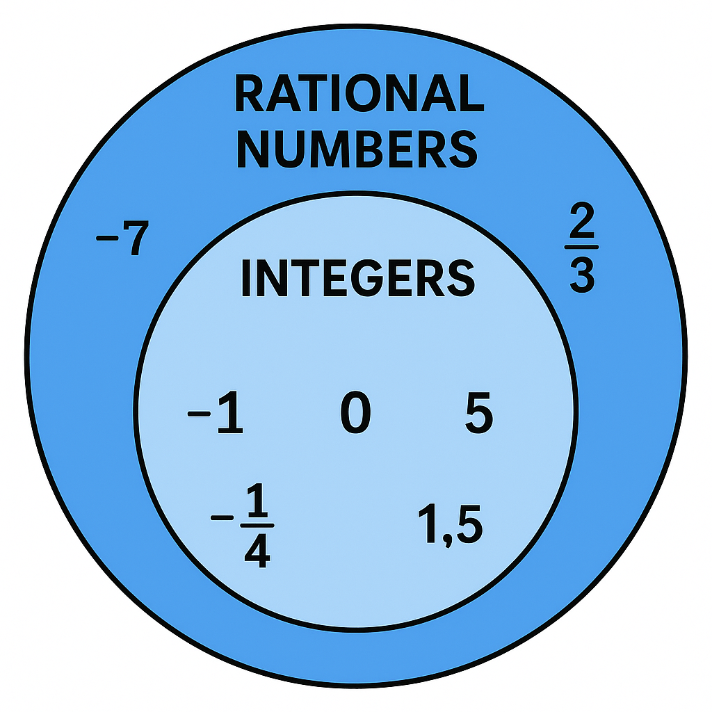

Rational Number Operations
In this unit we explored Rational number sets including integers, whole, and natural numbers. We explored integer operations of addition,subtraction, multiplication and division. We also explored fractions wiht all operations. WE ended this unit at the end of August in 2025.

Equations and Inequalities
In this unit we explored variables and expressions including combining like terms. We also explored how to solve equations with inverse operations up to 2 step equations. Following this we have been exploring inequalities up to 2 step inequality equations. We will end this unit at the beginning of october 2025.